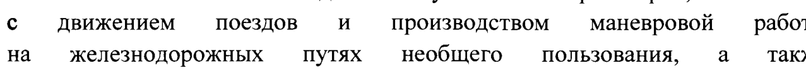
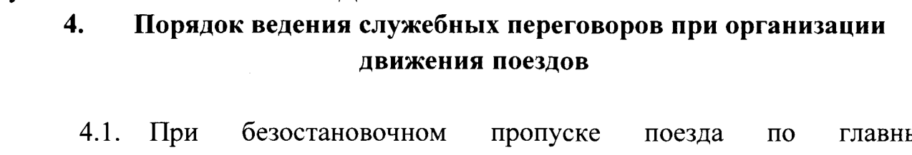
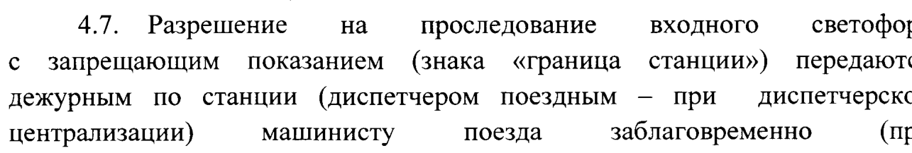
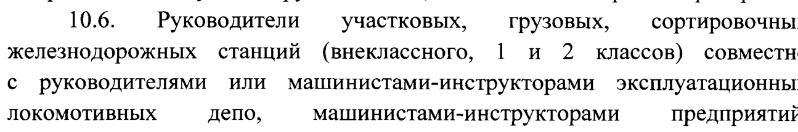

р/О
ОТКРЫТОЕ АКЦИОНЕРНОЕ ОБЩЕСТВО
«РОССИЙСКИЕ ЖЕЛЕЗНЫЕ ДОРОГИ» (ОАО «РЖД») РАСПОРЯЖЕНИЕ
22 марта 2023 г. Москва № 697/р
Об утверждении Порядка ведения на инфраструктуре ОАО «РЖД» служебных нереговоров при организации движения поездов и маневровой работы, закреплении подвижного состава, а также контроля за его исполнением
В целях снижения рисков нарушений безопасности движения при организации движения поездов и производстве маневровой работы:
1. Утвердить и ввести в действие с 1 мая 2023 г. прилагаемый Порядок ведения на инфраструктуре ОАО «РЖД» служебных переговоров при организации движения поездов и маневровой работы, закреплении подвижного состава, а также контроля за его исполнением (далее - Порядок).
2. Начальникам железных дорог организовать приведение в соответствие с Порядком, утвержденным настоящим распоряжением, локальных нормативных актов, касающихся порядка ведения служебных переговоров участниками перевозочного процесса и контроля за его исполнением.
3. Руководителям филиалов ОАО «РЖД» обеспечить изучение и выполнение требований Порядка, утвержденного настоящим распоряжением, ведения на инфраструктуре ОАО «РЖД» служебных переговоров при организации движения поездов и маневровой работы, закреплении подвижного состава, а также контроля его исполнения.
4. Признать утратившими силу с 1 мая 2023 г.:
распоряжение ОАО «РЖД» от 29 июля 2009 г. № 1591р «Об утверждении и введении в действие Регламента переговоров и действий работников локомотивных бригад, диспетчерского аппарата и дежурных по станциям для скоростного и высокоскоростного движения поездов на участке Бусловская - Санкт-Петербург - Москва - Нижний Новгород»;
распоряжение ОАО «РЖД» от 6 ноября 2014 г. № 2608р «Об установлении порядка выполнения операций по закреплению составов поездов на приемо-отправочных путях станций»;
распоряжение ОАО «РЖД» от 14 августа 2015 г. № 2052р «Об установлении порядка организации каналов радиосвязи для ведения переговоров при выполнении операций по закреплению составов поездов на приемоотправочных путях станций»;
распоряжение ОАО «РЖД» от 4 июля 2017 г. № 1258р «Об утверждении отдельных документов, регламентирующих работу в вопросах соблюдения установленного регламента служебных переговоров»;
распоряжение ОАО «РЖД» от 24 сентября 2018 г. № 2073/р «О внесении изменений в Рекомендации по применению Приложения № 20 к Инструкции по движению поездов и маневровой работе на железнодорожном транспорте Российской Федерации, утвержденные распоряжением ОАО «РЖД» от 4 июля 2017 г. № 1258р»;
распоряжение ОАО «РЖД» от 20 января 2020 г. № 75/р «О внесении изменений и дополнений в Порядок контроля в ОАО «РЖД» за выполнением установленного регламента служебных переговоров при поездной и маневровой работе»;
распоряжение ОАО «РЖД» от 5 марта 2020 г. № 496/р «Об утверждении Типовых требований по ведению регламента служебных переговоров при производстве маневровой работы на путях общего и необщего пользования железнодорожных станций»;
5. Контроль за исполнением Порядка возложить на заместителя генерального директора ОАО «РЖД» - начальника Центральной дирекции управления движением Глазкова М.О., заместителя генерального директора ОАО «РЖД» - начальника Дирекции тяги Валинского О.С, заместителя генерального директора ОАО «РЖД» - начальника Центральной дирекции инфраструктуры Шевцова Е.А., директора ОАО «РЖД» по энергетическому комплексу - начальника Трансэнерго Санько В.М., начальника Центральной дирекции моторвагонного подвижного состава ОАО «РЖД» Колотова А.А., начальника Дирекции скоростного сообщения ОАО «РЖД» Петрова А.Ю. по кругу ведения.
Первый заместитель
С.А.Кобзев
генерального директора ОАО «РЖД»
Исп. Павлов Р.Н., ЦД
(499) 262-13-20
УТВЕРЖДЕН
распоряжением ОАО «РЖД»
от «22 » марта 2023 г. № 697/р
порадок
ведения на инфраструктуре ОАО «РЖД» служебных переговоров при организации движения поездов и маневровой работы, закреплении подвижного состава, а также контроля за его исполнением 1. Общие положения
1.1. Порядок ведения на инфраструктуре ОАО «РЖД» служебных переговоров при организации движения поездов и маневровой работы, закреплении подвижного состава, а также контроля за его исполнением (далее - Порядок) основан на требованиях, установленных приложением № 20 к Инструкции по организации движения поездов и маневровой работы на железнодорожном транспорте Российской Федерации (приложение № 2 к Правилам технической эксплуатации железных дорог Российской Федерации, утвержденным приказом Министерства транспорта Российской Федерации от 23 июня 2022 г. № 250).
1.2. Порядок уточняет и дополнительно регламентирует правила обмена между участниками перевозочного процесса информацией, связанной с приемом, отправлением и пропуском поездов (в том числе скоростных и высокоскоростных), производством маневровой работой, закреплением подвижного состава на путях железнодорожных станций.
1.3. Настоящий Порядок распространяется на:
работников железнодорожных станций и диспетчерских центров управления перевозками;
работников локомотивных бригад (в том числе моторвагонного подвижного состава, специального самоходного подвижного состава, скоростных и высокоскорстных поездов);
работников подразделений филиалов ОАО «РЖД», выполняющих обязанности по руководству маневровой работой;
начальников пассажирских поездов;
работников сторонних организаций, чьи локомотивы, моторвагонный подвижной состав, специальный самоходный подвижной состав и локомотивные (составительские) бригады имеют право выезда на инфраструктуру ОАО «РЖД».
Порядок ознакомления работников организаций, чьи локомотивы, моторвагонный подвижной состав, специальный подвижной состав и локомотивные (составительские) бригады имеют право выезда на инфраструктуру ОАО «РЖД», с нормативно-технической документацией (вносимых изменениях в нормативно-техническую документацию) ОАО «РЖД», на основании которой организуется движение поездов и подача (выход) локомотивов, моторвагонного подвижного состава, специального подвижного состава с путей необщего пользования на конкретную железнодорожную станцию (участок), устанавливается разделом 6 местной инструкции о порядке обслуживания и организации движения на железнодорожном пути необщего пользования, а также железнодорожном пути, находящемся в ведении филиала или структурного подразделения ОАО «РЖД».
1.4. Особенности ведения служебных переговоров, связанных

железнодорожных путях, переданных в ведение функциональных филиалов или структурных подразделений ОАО «РЖД», отражаются в местных инструкциях о порядке обслуживания и организации движения на данных путях.
2. Термины
2.1. В настоящем Порядке используются следующие термины:
команда (указание, сообщение) - переданное в устной форме или ручными сигналами руководство к действию по организации движения поездов или маневровой работы;
маневровый полурейс - перемещение по железнодорожным путям подвижного состава при выполнении маневровой работы без перемены направления движения;
машинист - машинист локомотива, моторвагонного подвижного состава, скоростного и высокоскоростного моторвагонного подвижного состава, специального подвижного состава на комбинированном ходу, машинист или водитель специального самоходного подвижного состава;
неиспользованный маршрут - завершенный полурейс, в результате которого отсутствует возможность открытия сигнала светофора на разрешающее показание для следования подвижного состава в обратном направлении, когда между локомотивом (специальным самоходным подвижным составом, специальным подвижным составом на комбинированном ходу, моторвагонным подвижным составом) и первым попутным светофором имеются остряки стрелочных переводов;
план маневровой работы - краткое указание последовательности выполнения маневровых передвижений. Может состоять из одного или нескольких полурейсов;
поезд пассажирский высокоскоростной - пассажирский поезд, технические характеристики подвижного состава которого позволяют осуществлять движение со скоростью более 200 км/ч;
поезд пассажирский скоростной - пассажирский поезд, технические характеристики подвижного состава которого позволяют осуществлять движение со скоростью от 141 до 200 км/ч включительно;
помощник машиниста - помощник машиниста локомотива, моторвагонного подвижного состава, специального подвижного состава на комбинированном ходу, специального самоходного подвижного состава;
приказ - переданное в устной форме диспетчером поездным, дежурным по станции (иным работником, распоряжающимся маневрами в районе станции) обязательное к исполнению руководство к действию по организации движения поездов или маневровой работы, имеющее регистрационный номер, дату и время передачи;
распорядитель маневров (лицо, распоряжающееся маневрами) - работник железнодорожной станции, уполномоченный согласно техническораспорядительному акту станции единолично распоряжаться маневрами на станции или в отдельно выделенном районе станции (дежурный по железнодорожной станции, сортировочной горке, дежурный или оператор поста централизации, диспетчер маневровый и т.п.);
руководитель маневров - работник, непосредственно руководящий передвижениями маневрового состава (составитель поездов; главный кондуктор; работник, совмещающий профессии составителя поездов или главного кондуктора; дежурный по сортировочной горке; работник, определенный владельцем железнодорожных путей необщего пользования);
устройства безопасности - основные и дополнительные локомотивные устройства безопасности (АЛСН, БЛОК, БЛОК-М, КЛУБ-У, КЛУБ-УП, МПСУ-БД, САУТ-ЦМ/485, СОБ-400, ТСКБМ и другие).
2.2. В настоящем Порядке (везде по тексту исправить) применяются следующие сокращения:
ВСМВПС - скоростной и высокоскоростной моторвагонный подвижной состав;
ГМВ - гектометровый радиочастотный диапазон;
ДОСС - Дирекция скоростного сообщения (филиал ОАО «РЖД»);
ДСП - дежурный по железнодорожной станции (другой работник, на которого согласно техническо-распорядительного акта железнодорожной станции возложено управление стрелками и сигналами);
ИДИ - Инструкция по организации движения поездов и маневровой работы на железнодорожном транспорте Российской Федерации (приложение № 2 к Правилам технической эксплуатации железных дорог Российской Федерации, утвержденным приказом Министерства транспорта Российской Федерации от 23 июня 2022 г. № 250);
ИСИ - Инструкция по сигнализации на железнодорожном транспорте Российской Федерации (приложение № 1 к Правилам технической эксплуатации железных дорог Российской Федерации, утвержденным приказом Министерства транспорта Российской Федерации от 23 июня 2022 г. № 250):
KB - короткие волны (декаметровый радиочастотный диапазон);
MB - метровый радиочастотный диапазон;
МВПС - моторвагонный подвижной состав;
ПРС - поездная радиосвязь;
ССПС - специальный самоходный подвижной состав, специальный подвижной состав на комбинированном ходу;
ТЧМ - машинист локомотива (МВПС, ВСМВПС, ССПС);
ЦСТР - цифровая система технологической радиосвязи.
3. Основные требования к ведению служебных переговоров участников перевозочного процесса
3.1. Основным средством ведения служебных переговоров, касающихся организации движения поездов, маневровой работы и закрепления подвижного состава должны являться устройства электросвязи. При наличии технических устройств должна вестись запись переговоров.
3.2. Переговоры с машинистом скоростного или высокоскоростного поезда должны вестись по каналу сети ЦСТР. При отсутствии или неисправности на ВСМВПС, локомотиве оборудования ЦСТР переговоры между дежурным по станции (диспетчером поездным - при диспетчерской централизации) и машинистом ведутся по каналу аналоговой сети ПРС, определяемому в качестве резервного канала для соответствующей железнодорожной линии с движением скоростных и высокоскоростных поездов (далее - аналоговой сети ПРС).
3.3. Согласно приложению № 20 к ИДП переговоры между работниками, задействованными в маневровой и поездной работе, ведутся в свободной форме с соблюдением следующих требований:
а) команды (указания, сообщения), передаваемые по радиосвязи и двусторонней парковой связи, должны быть лаконичными и понятными;
б) работник, передавший указание (команду, сообщение), обязан убедиться в правильности его восприятия (машинистом локомотива, руководителем маневров, другими работниками);
в) если машинист (руководитель маневров) не уверен в правильности восприятия сигнала (указания, сообщения, команды) он обязан выяснить обстановку до начала передвижений.
3.4. Для выполнения вышеуказанных требований участниками перевозочного процесса должен соблюдаться следующий порядок ведения служебных переговоров:
а) вызов абонента и установление с ним связи;
б) передача абоненту команды (указания, сообщения);
в) краткое повторение абонентом принятой команды (указания, сообщения);
г) убеждение в правильности восприятия путем выслушивания краткого повтора и подтверждения словами «Верно, выполняйте» («Верно»);
д) доведение (при необходимости) до абонента сопутствующей информации, касающейся организации движения поездов и маневровых передвижений, обеспечения безопасности движения и технологии перевозочного процесса (ограничениях скорости движения; вопросы режима труда и отдыха локомотивной бригады; передачи перевозочных документов; следования по удалению за поездом и т.п.).
е) краткое повторение абонентом принятой сопутствующей информации и убеждение в правильности ее восприятия путем выслушивания краткого повтора и подтверждения словами «Верно, выполняйте» («Верно»).
Пример 1:
а) вызов абонента и установление с ним связи:
ДСП: «Машинист поезда № 2607 на приближении к станции Пушкино».
ТЧМ: «Слушаю Вас, машинист поезда № 2607 Зимин».
б) передача абоненту команды (указания, сообщения):
ДСП: «На станцию Пушкино прибываете на 3-й путь, выходной светофор закрыт. ДСП Шилов».
в) краткое повторение абонентом переданной команды (указания, сообщения):
ТЧМ: «Понятно, принимаете на 3-й путь, выходной светофор запрещающий. Машинист Зимин».
г) убеждение в правильности восприятия:
ДСП: «Верно!».
д) доведение (при необходимости) до абонента сопутствующей информации:
ДСП: «Прибываете вариантным маршрутом, по съезду 2/4 скорость не более 25 км/ч. ДСП Шилов»;
е) краткое повторение абонентом принятой сопутствующей информации и убеждение в правильности ее восприятия:
ТЧМ: «Понятно, вариантным маршрутом, скорость не более 25 км/ч. Машинист Зимин».
ДСП: «Верно».
Пример 2:
а) вызов абонента и установление с ним связи (при следовании станции напроход - при открытых входном, выходном (маршрутном) светофорах):
ДСП: «Машинист поезда № 1 на приближении к станции Мытищи».
ТЧМ: «Слушаю Вас, машинист поезда № 1 Спиридонов».
б) передача абоненту команды (указания, сообщения):
ДСП: «По маршруту следования в выходной горловине на стрелке № 6 скорость не более 40 км/ч. ДСП Чернов».
в) краткое повторение абонентом переданной команды (указания, сообщения):
ТЧМ: «Понятно, в выходной горловине на стрелке № 6 скорость не более 40 км/ч. Машинист Спиридонов».
г) убеждение в правильности восприятия:
ДСП: «Верно!».
Для убеждения в правильности восприятия работник, передавший команду (указание, сообщение), до получения от абонента краткого ее повтора не должен отвлекаться на другие переговоры.
3.5. Практические навыки выполнения вышеуказанных требований, а также порядка ведения служебных переговоров должны быть освоены работниками, участвующими в организации движения поездов и маневровой работы, в процессе стажировки на должность. Правильность их выполнения проверяется перед допуском работника к самостоятельной работе порядком, установленном в ОАО «РЖД».

железнодорожным путям раздельного пункта переговоры между дежурным по железнодорожной станции (диспетчером поездным - при диспетчерской централизации) и машинистом не ведутся при одновременном соблюдении указанных условий:
светофоры (входной, маршрутный, выходной) открыты на разрешающе показание;
локомотивные устройства безопасности исправны;
отсутствует необходимость передачи машинисту предупреждений по маршруту следования поезда.
4.2. При отправлении поезда, когда имеются два и более свободных блок-участка удаления, полностью приготовлен маршрут отправления или свободен впереди лежащий перегон при полуавтоматической блокировке, отсутствует необходимость передачи предупреждений по маршруту следования поезда, переговоры по радиосвязи между дежурным по железнодорожной станции (диспетчером поездным - при диспетчерской централизации) и машинистом не ведутся.
4.3. Дежурный по железнодорожной станции обязан вызвать машиниста поезда, находящегося на участке приближения к раздельному пункту (на первом или втором участке приближения в зависимости от местных условий приема поезда), и довести информацию о порядке следования:
при приеме поезда, когда входной, выходной (маршрутный) светофор имеет запрещающее показание;
при необходимости передачи разрешения на проследование входного (маршрутного) светофора с запрещающим показанием, знака «граница станции»;
при пропуске поезда по боковым железнодорожным путям;
при приеме (отправлении) поезда вариантным маршрутом;
при приеме поезда на железнодорожный путь, не предусмотренный техническо-распорядительным актом станции (неспециализированный железнодорожный путь);
при приеме пассажирского (моторвагонного) поезда с остановкой, когда графиком движения предусмотрен пропуск поезда без остановки;
при приеме пассажирского (моторвагонного) поезда на боковой путь, когда графиком движения предусмотрен пропуск поезда без остановки по главному железнодорожному пути;
необходимости остановки у входного (маршрутного) светофора с запрещающим показанием, знака «граница станции».
4.4. На линиях, оборудованных устройствами диспетчерской централизации, диспетчер поездной обязан вызвать машиниста поезда, находящегося на участке приближения к раздельному пункту (на первом или втором участке приближения в зависимости от местных условий приема поезда), и довести информацию о порядке следования в случаях:
приема на железнодорожный путь, не предусмотренный техническораспорядительным актом станции (неспециализированный железнодорожный путь);
приема пассажирского (моторвагонного) поезда с остановкой, когда графиком движения предусмотрен пропуск поезда без остановки;
необходимости передачи разрешения на проследование входного (маршрутного) светофора с запрещающим показанием, знака «граница станции»;
следования поезда вариантным маршрутом;
изменения показания входного светофора на более запрещающий;
необходимости передачи ему сообщения об изменении порядка приема или пропуска поезда по станции;
возникновения ситуации, угрожающей безопасности движения поездов;
необходимости остановки у входного (маршрутного) светофора с запрещающим показанием, знака «граница станции»;
имеющихся особых условиях приема (отправления), пропуска поезда, исходя из тяговых расчетов.
В случае наличия на входном (маршрутном) или выходном светофорах показания несоответствующего маршруту следования поезда, в том числе указывающего на пропуск поезда по боковому пути или вариантному маршруту, а также при наличии запрещающего показания и отсутствии сообщений о порядке приема (отправления, пропуска), машинист вправе первым вызвать дежурного по станции (диспетчера поездного - при диспетчерской централизации) и уточнить информацию о предстоящем порядке следования поезда.
4.5. При следовании поезда (в пределах железнодорожного пути) к маршрутному или выходному светофору с запрещающим показанием дежурному по станции (диспетчеру поездному) разрешается вызывать машиниста по радиосвязи только в случае:
возникновения ситуации, угрожающей безопасности движения поездов (несанкционированное движение вагонов, неуправляемый состав поезда, потеря контроля положения стрелочного перевода под подвижным составом, выявление схода подвижного состава с рельсов и т.п.);
необходимости передачи разрешения на проследование светофора с запрещающим показанием.
Пример 3:
ДСП: «Внимание! Машинист поезда № 2613, прибывающий на 5-й путь станции Сушково, остановка! ДСП Стариков».
ТЧМ (после приведения в действие автотормозов): «Машинист поезда № 2613 Сумин останавливаюсь (остановился) на 5-м пути станции Сушково».
ДСП: «Стрелка № 3 под Вашим поездом потеряла контроль. Осмотрите состав, доложите габарит. ДСП Стариков».
ТЧМ: «Стрелка № 3 под поездом потеряла контроль. Осмотрю состав и доложу о наличии габарита. Машинист поезда № 2613 Сумин».
ДСП: «Верно, выполняйте».
4.6. Требования пунктов 4.1 - 4.5 настоящего Порядка распространяются также при организации движения поездов, обслуживаемых машинистом без помощника машиниста.

полуавтоблокировке и автоблокировке - до проследования поездом предвходного светофора, при автоматической локомотивной сигнализации как самостоятельного средства интервального регулирования движения поездов - до проследования поездом границы блок-участка перед входным светофором). В ином случае разрешение на проследование запрещающего показания входного светофора может быть передано машинисту только после получения от него сообщения о готовности принять данную информацию.
4.8. Порядок передачи машинисту информации о необходимости смены частоты (канала) поездной радиосвязи по маршруту следования поезда устанавливается локальным нормативным актом, утверждаемым начальником железной дороги, и отражается в приложении к техническораспорядительному акту станции «Регламент переговоров».
4.9. Порядок доведения информации до машиниста поезда дежурным по железнодорожной станции в случае приема поезда на тупиковый путь устанавливается локальным нормативным актом, утверждаемым начальником железной дороги, и отражается в приложении к техническораспорядительному акту станции «Регламент переговоров».
5. Порядок ведения служебных переговоров при организации маневровой работы
5.1. Маневровая работа должна проводиться в соответствии планом. План работы доводит до руководителя маневров и машиниста распорядитель маневров. Допускается доведение распорядителем маневров плана маневровой работы по радиосвязи одновременно до руководителя маневров и машиниста. В случае, если план маневровой работы доведен до руководителя маневров дежурным по станции лично, руководитель обязан довести его до машиниста и других участников маневров до начала передвижений.
5.2. Для исключения возможности неверного восприятия все команды (указания, сообщения) должны быть адресными. Для адресного обращения к участникам маневров используются должность в сочетании с фамилией (например - «составитель Иванов», «машинист Сидоров» и т.п.). Также может использоваться номер локомотива и (или) фамилия машиниста, задействованного на маневрах (например - «126 Шишкин», «машинист Шишкин»). Допускается использование позывных для локомотивов, применяемых в маневровой работе. Порядок присвоения позывных и железнодорожные станции, на которых применяется данный порядок, устанавливается локальным нормативным актом начальника железной дороги и указывается в приложении к техническо-распорядительному акту станции «Регламент переговоров».
5.3. План маневровой работы доводится:
при выполнении маневровых передвижений локомотивом (сплоткой локомотивов, ССПС, МВПС), не обслуживаемым составителем поездов (главным кондуктором) - непосредственно до машиниста (не более чем на два полурейса);
при выполнении маневровых передвижений составом (локомотивом, сплоткой локомотивов, ССПС, МВПС), обслуживаемых составителем поездов (главным кондуктором) - до машиниста и составителя поездов (главного кондуктора). В данном случае количество полурейсов в плане маневровой работы определяется, исходя из местных условий, и указывается в приложении к техническо-распорядительному акту станции «Регламент переговоров».
Пример 4:
ДСП: «Машинист локомотива № 3277 Сумов, на контрольном посту у М76».
ТЧМ: «№ 3277 Сумов слушаю».
ДСП: «План работы - от М76 из депо по 6-му свободному пути будем следовать в тупик № 15, после смены кабины будем заезжать на 25-й путь парка отправления под состав. ДСП Котов».
ТЧМ: «Понятно, из депо от М76 по 6-му свободному будем переезжать в тупик, смена кабины, далее - на 25-й путь под состав. Машинист Сумов 3277».
ДСП: «Верно».
После открытия дежурным по станции (другим работником, управляющим в районе станции стрелками и светофорами) сигнала светофора машинист приступает к маневровым передвижениям.
Пример 5 (подформирование группы из 5-ти вагонов на свободном пути, 21 полурейс):
ДСП: «Машинист № 3277 Сумов, составитель Шишкин».
ТЧМ: «№ 3277 Сумов слушаю».
Руководитель маневров: «Составитель Шишкин слушает».
ДСП: «Довожу план работы - от Мб заезжаем на 6-й путь, забираем 30 вагонов. На 7-м свободном пути формируем группу из 5 цистерн для подачи на нефтебазу. Работать будем по 6-му и 7-му путям с вытяжкой на путь № 20. ДСП Котов».
Руководитель маневров: «Понятно, на 6-м пути забираем 30 вагонов, формируем на 7-м пути подачу из 5 цистерн на нефтебазу. Работаем по 6-му и 7-му путям с вытяжкой на путь № 20, составитель Шишкин».
ТЧМ: «Понятно, формируем подачу на нефтебазу, работаем на 6-м и 7-м путях по 20-й вытяжке, № 3277 Сумов».
ДСП: «Верно, ДСП Котов».
Далее, дежурный по железнодорожной станции (другой работник, управляющий в районе станции стрелками и светофорами) готовит в соответствии с планом работы маршруты, в переговорах по радиосвязи не участвует.
Дежурным по станции (другим работником, непосредственно управляющим стрелками и светофорами в маневровом районе станции, или при передаче стрелок на местное управление) маршрут движения маневрового состава должен готовиться на весь полурейс следования согласно плану маневровой работы.
При невозможности приготовления маневрового маршрута на весь путь следования (в соответствии с доведенным планом) машинист (руководитель маневров - при движении вагонами вперед) должен быть предупрежден дежурным по станции (другим работником, непосредственно управляющим стрелками и светофорами в маневровом районе станции, или при передаче стрелок на местное управление) о месте остановки (литере светофора с запрещающим показанием или номере пути при отсутствии светофоров).
Изменение дежурным по станции (работником, управляющим стрелками и сигналами) ранее приготовленного маршрута (перекрытие маневрового светофора, перевод стрелок и т.п.) допускается после передачи машинисту и руководителю маневров команды о прекращении маневровых передвижений и убеждения в остановке маневрового состава по докладу машиниста.
В случае, если план маневровой работы предусматривает только один полурейс, он может быть заменен доведением информации до машиниста локомотива (руководителя маневров) о готовности маршрута в требуемом направлении.
5.4. При производстве маневров одиночным локомотивом без вагонов (сплоткой локомотивов, МВПС, ССПС) машинист имеет право начать движение при единовременном соблюдении условий:
а) наличии доведенного плана маневровой работы;
б) наличии разрешающего показания маневрового светофора.
При выезде с железнодорожного пути, на котором остается подвижной состав, кроме того, машинистом должно быть получено сообщение об их закреплении от руководителя маневров. При выполнении маневровых передвижений составом (локомотивом, сплоткой локомотивов, ССПС, МВПС), не обслуживаемым составителем поездов (главным кондуктором) или другим работником, исполняющим его обязанности, такое сообщение должно быть получено от дежурного по станции (дежурного по сортировочной горке или другого работника, ответственного за контроль правильности и надежности закрепления подвижного состава в данном районе станции).
Основанием для выполнения последующего полурейса из доведенного ранее плана маневровой работы является разрешающее показание маневрового светофора, дополнительных указаний не требуется. В показаниях маневровых светофоров, положении стрелок, а также в сигналах, передаваемых ручными сигнальными приборами, машинист убеждается лично.
5.5. При производстве маневров с вагонами (со сплотками локомотивов, а также МВПС (ВСМВПС) или ССПС, обслуживаемых составителем поездов или другим работником, исполняющим обязанности руководителя маневров) машинист имеет право начать движение только при единовременном соблюдении условий:
а) наличии доведенного плана маневровой работы;
б) наличии разрешающего показания маневрового светофора;
в) получении команды (указания, сообщения) на начало движения от руководителя маневров.
При выезде с железнодорожного пути, на котором остается подвижной состав, кроме того, машинистом должно быть получено сообщение об их закреплении от руководителя маневров.
Основанием для выполнения последующего полурейса из доведенного ранее плана маневровой работы является: разрешающее показание маневрового светофора и полученная команда (указание, сообщение) на начало движения от руководителя маневров.
В показаниях маневровых светофоров, положении стрелок машинист убеждается: лично (при движении вперед локомотивом); по докладу составителя поездов или другого работника, исполняющего обязанности руководителя маневров (при движении вперед вагонами).
5.6. В случае отсутствия видимости светофора из кабины управления машинистом локомотива (сплотки локомотивов, ССПС, МВПС, при следовании локомотивом вперед или резервом) должно быть получено сообщение о готовности стрелок для маневровых передвижений по радиосвязи от дежурного по железнодорожной станции (работника, распоряжающегося маневровой работой в данном районе).
Пример 6:
ДСП: «Машинист Шишкин, маневровый светофор ЧМ6 открыт, маршрут готов с пути № 6 в тупик № 2. ДСП Сорокин».
5.7. При невозможности открытия светофора (в том числе при движении по «неиспользованному маршруту»), а также в случае отсутствия маневрового светофора дежурный по железнодорожной станции (работник, распоряжающийся маневровой работой в данном районе станции) должен передать машинисту (руководителю маневров - при движении вагонами вперед) сообщение о готовности стрелок для маневровых передвижений, а также устное разрешение на проследование запрещающего показания светофора.
Пример 7:
ДСП: «Я, дежурный по станции Сафроново Сорокин, разрешаю машинисту локомотива Сумову проследовать запрещающее показание маневрового светофора Мб и следовать до светофора М2, далее руководствоваться его показаниями, маршрут готов. Светофор Мб неисправен».
Пример 8:
ДСП: «Я, дежурный поста централизации Шишкин, разрешаю составителю поездов Котову проследовать запрещающее показание светофора М7, маршрут в тупик № 9 готов».
5.8. При отсутствии маневровых светофоров (не предусмотрены имеющейся системой электрической централизации или при отсутствии электрической централизации стрелок и светофоров) перед началом передвижений машинист (руководитель маневров - при движении вагонами вперед) должен получить от дежурного по железнодорожной станции (работника, распоряжающегося маневровой работой в данном районе станции) сообщение о готовности стрелок для маневровых передвижений.
Пример 9:
ДСП: «Машинист Сумов, с пути № 7 маршрут движения в тупик № 9 готов, ДСП Шишкин».
Конкретный порядок ведения переговоров при производстве маневровой работы на стрелках, не оборудованных электрической централизацией, а также привлечения дежурных стрелочных постов для передачи сообщений, указаний и сигналов о готовности стрелок к маневровым передвижениям с учетом местных особенностей устанавливается приложением к техническо-распорядительному акту станции «Регламент переговоров».
5.9. При движении маневрового состава вагонами вперед информацию о свободности пути, показаниях маневровых светофоров и положении стрелок по маршруту следования, сигналах, передаваемых ручными сигнальными приборами, а также об указаниях работников, на которых возложены обязанности по приготовлению маневровых маршрутов, до машиниста доводит руководитель маневров.
5.10. Перед началом движения руководитель маневров обязан указывать машинисту локомотива направление движения, например: «локомотивом вперед», «рабочей кабиной вперед», «капотом вперед», «в четную», «в нечетную сторону», «вагонами вперед» и т.п. В случае прицепленного подвижного состава с обеих сторон от тяговой подвижной единицы указания «вагонами вперед», «вагонами назад» не применяются.
5.11. С целью обеспечения бдительности и взаимного контроля при следовании по железнодорожным путям руководитель маневров и машинист периодически (не реже 20 сек.) обязаны обмениваться сообщениями и указаниями по радиосвязи (за исключением случаев нахождения руководителя маневров в кабине локомотива или на площадке локомотива в зоне прямой видимости машиниста или помощника машиниста). Такими сообщениями и указаниями в обязательном порядке являются:
показания светофоров по маршруту следования;
положение стрелок в маршруте движения;
занятость (свободность) пути.
Кроме того, могут использоваться сообщения о местонахождении составителя поездов (главного кондуктора) и другие.
При заезде на занятый железнодорожный путь руководитель маневров доводит до машиниста информацию о вступлении на железнодорожный путь первого вагона и расстояния до стоящих на этом железнодорожном пути вагонов (в случае отсутствия свободного места на пути или отсутствии видимости вагонов, расположенных на пути, обязан довести данную информацию до машиниста).
Машинист маневрового локомотива обязан повторять сообщения руководителя маневров (или подавать соответствующий звуковой сигнал).
Машинист, в случае неполучения от руководителя маневров сообщений более 20 сек. и отсутствии ответа на вызов по радиосвязи, обязан незамедлительно остановить состав; уведомить об этом работника, распоряжающегося маневрами в данном районе станции; выяснить местоположение руководителя маневров (лично, направлением помощника машиниста по составу, через других работников железнодорожного транспорта).
5.12. При переходе с поездной на маневровую работу и при разрешающем показании маневрового светофора помощник машиниста обязан доложить машинисту: «Переходим на маневровые передвижения, КЛУБ (другой прибор безопасности) переведен в маневровый режим; маневровый светофор ... (литер) с ... пути «белый»; стрелки по маршруту (в пределах видимости)». Машинист обязан ответить: «Вижу белый с ... пути, стрелки по маршруту».
Далее, при движении локомотивом (МВПС, ССПС) вперед машинист и помощник машиниста обязаны сообщать друг другу о показаниях маневровых светофоров и положении стрелок по маршруту следования (в пределах видимости), контролировать свободность железнодорожного пути, по которому следует подвижной состав, а также установленную скорость движения.
6. Порядок ведения служебных переговоров при закреплении подвижного состава
6.1. Порядок ведения служебных переговоров при закреплении подвижного состава установлен требованиями раздела IV Приложения № 20 к ИДП.
6.2. Основным средством ведения переговоров при выполнении операций, связанных с закреплением подвижного состава, должны являться устройства станционной радиосвязи с их фиксацией на записывающем устройстве (при его наличии).
Передача команд (указаний, сообщений) по радиосвязи машинисту от работника, непосредственно выполняющего операции закрепления подвижного состава (снятия закрепления), через третье лицо запрещается.
В исключительных случаях (до восстановления нормальной работы при отказе устройств радиосвязи; при неустойчивой связи и наличии радиопомех в эфире, при которых пользование устройствами радиосвязи не представляется возможным) для ведения служебных переговоров при закреплении подвижного состава могут быть использованы устройства мобильной связи, ремонтно-оперативной связи, а также ручные сигналы, установленные требованиями пункта 91 ИСИ. При использовании ручных сигналов должна обеспечиваться прямая видимость между работником, подающим ручной сигнал, и машинистом (помощником машиниста), в том числе с применением зеркал и (или) видеокамер локомотива. При отсутствии прямой видимости должны привлекаться другие работники станции для дублирования ручных сигналов и обеспечения видимости передаваемых сигналов. Основанием для использования (окончания использования) мобильной, ремонтно-оперативной связи, ручных сигналов является оформленная в журнале осмотра формы ДУ-46 запись о нарушении нормальной работы устройств станционной радиосвязи (запись об устранении причин соответственно).
6.3. Перед началом процесса закрепления состава поезда (изъятия средств закрепления из-под состава поезда) производится проверка работоспособности радиосвязи между дежурным по железнодорожной станции, машинистом и работником станции, на которого согласно техническо-распорядительному акту станции возложены обязанности выполнения операций по закреплению подвижного состава.
6.4. На железнодорожной станции переговоры при закреплении состава поезда (изъятии средств закрепления из-под состава поезда) между работником станции, на которого согласно техническо-распорядительному акту станции возложены данные обязанности, и машинистом локомотива осуществляются под контролем дежурного по железнодорожной станции.
6.5. На станциях участка, где обращаются поездные локомотивы, оборудованные двухдиапазонными или трехдиапазонными радиостанциями, применяется следующий порядок выполнения служебных переговоров при выполнении операций, связанных с закреплением подвижного состава:
перед закреплением состава поезда (изъятием средств закрепления из-под подвижного состава) машинист по указанию дежурного по железнодорожной станции переключает радиостанцию локомотива с канала поездной радиосвязи диапазона ГМВ на канал диапазона MB. Дежурный по железнодорожной станции обязан сообщить машинисту фамилию работника станции, который будет производить операции по закреплению или изъятию средств закрепления из-под подвижного состава;
работник станции, на которого согласно техническораспорядительному акту станции возложены обязанности по закреплению подвижного состава (изъятию средств закрепления из-под подвижного состава) по указанию дежурного по железнодорожной станции переключает носимую радиостанцию на канал диапазона MB. Дежурный по железнодорожной станции обязан сообщить указанному работнику фамилию машиниста и номер локомотива, участвующего в процессе закрепления подвижного состава (изъятия средств закрепления из-под подвижного состава);
машинист, получив доклад от работника станции об окончании операций по закреплению (изъятию средств закрепления из-под подвижного состава), переключает радиостанцию на канал связи, требующийся для проведения дальнейших операций согласно плану работ;
работник станции докладывает дежурному по железнодорожной станции о закреплении (изъятии средств закрепления из-под подвижного состава).
6.6. На участках, где обращаются поездные локомотивы, оборудованные одно диапазонными радиостанциями:
на станциях примыкания эксплуатационных локомотивных депо работник данного депо перед закреплением состава поезда или изъятием средств закрепления из-под подвижного состава по указанию дежурного по железнодорожной станции вручает машинисту носимую радиостанцию, настроенную на канал станционной радиосвязи соответствующего маневрового района. Дежурный по железнодорожной станции обязан сообщить локомотивной бригаде фамилию работника станции, который будет производить операции по закреплению (изъятию средств закрепления из-под подвижного состава);
на станциях, где отсутствуют эксплуатационные локомотивные депо, перед закреплением состава поезда (изъятием средств закрепления из-под подвижного состава) дежурный по железнодорожной станции вручает машинисту локомотива через работника станции носимую радиостанцию, настроенную на канал станционной радиосвязи соответствующего маневрового района. Дежурный по железнодорожной станции обязан сообщить локомотивной бригаде фамилию работника станции, который будет производить операции по закреплению (изъятию средств закрепления из-под подвижного состава).
дежурный по железнодорожной станции обязан сообщить работнику станции, на которого согласно техническо-распорядительному акту станции возложены обязанности по закреплению подвижного состава, фамилию машиниста и номер локомотива, участвующего в процессе закрепления подвижного состава (изъятия средств закрепления из-под подвижного состава);
после окончания операций работник станции докладывает дежурному по железнодорожной станции о закреплении (изъятии средств закрепления из-под подвижного состава);
машинист возвращает носимую радиостанцию ответственному работнику станции или эксплуатационного локомотивного депо.
6.7. О включении автоматического стояночного тормоза машинист производит доклад дежурному по железнодорожной станции с указанием времени и способа закрепления, номера пути, количества вагонов (для МВПС, ВСМВПС - также серии подвижного состава) и своей фамилии. Дежурный по железнодорожной станции подтверждает правильность восприятия доклада машиниста кратким повтором.
Пример 10:
ТЧМ: «Дежурный по станции Пушкино, в 5 час. 20 мин. на 10-м пути станции закрепил электропоезд (серия, номер) из трех вагонов стояночным пружинным тормозом. Машинист Ступин».
ДСП: «Понятно, на 10-м пути в 5 час. 20 мин. электропоезд (серия, номер) из трех вагонов, 12 осей, закреплен стояночным пружинным тормозом. ДСП Пушкино Котов».
После приведения подвижного состава в рабочее состояние, перед началом движения с железнодорожного пути отстоя, машинист обязан снять закрепление автоматическим стояночным тормозом. О снятии закрепления машинист по радиосвязи докладывает дежурному по станции, указывая время снятия, номер пути, количество вагонов (для МВПС, ВСМВПС - также серию подвижного состава) и свою фамилию. Дежурный по железнодорожной станции подтверждает восприятие доклада машиниста кратким повтором.
Пример 11:
ТЧМ: «Дежурный по станции Пушкино, в 10 час. 30 мин. на 10-м пути станции закрепление электропоезда (серия, номер) из трех вагонов стояночным пружинным тормозом снял. Машинист Ступин».
ДСП: «Понятно, Ступин. На электропоезде (серия, номер) составностью 3 вагона, 12 осей, на 10-м пути закрепление стояночным пружинным тормозом снято. ДСП Пушкино Котов».
При неисправности автоматического стояночного тормоза закрепление выполняется тормозными башмаками в соответствии с нормами закрепления, установленными техническо-распорядительным актом станции.
6.8. Конкретный порядок ведения служебных переговоров при закреплении подвижного состава (в том числе порядок использования ручных сигналов), а также передачи переносных радиостанций локомотивным бригадам указывается в приложении к техническораспорядительному акту станции «Регламент переговоров».
7. Порядок ведения служебных переговоров по радиосвязи в аварийных и нестандартных ситуациях
7.1. В случае возникновения аварийной ситуации сообщение в эфир радиосвязи должно начинаться словами: «Внимание все!» (при необходимости повторяется несколько раз). Вызывающий абонент обязан указывать свою должность и фамилию, далее следует текст сообщения. При получении указанного сообщения работники, находящиеся в зоне действия радиосвязи, обязаны прекратить переговоры, внимательно выслушать сообщение и принять соответствующие меры.
Пример 12:
ТЧМ: «Внимание, все! Я, машинист Петров поезда № 3607, следую по первому пути перегона Софрино - Пушкино 506-й километр пикет 10, вышли из строя тормоза. Примите меры».
Пример 13:
«Внимание, все! Я, машинист Петров поезда № 2506, на 106-м километре четного пути перегона Пушкино - Софрино нарушен габарит вследствие схода подвижного состава. Будьте бдительны!».
7.2. В случае остановки поезда на перегоне у запрещающего показания светофора (в т.ч. входного) информацию о месте остановки с указанием километра, пикета и пути перегона машинист обязан сообщить дежурным по станциям, ограничивающих перегон (диспетчеру поездному - при диспетчерской централизации).
Пример 14:
ТЧМ: «Внимание, внимание! Я, машинист Котов поезда № 3001. На 231 -м километре 6-м пикете первого пути перегона Пушкино - Софрино остановился у запрещающего показания входного светофора Н станции Софрино (проходного светофора № 11). Будьте бдительны!».
Для передачи информации используется связь KB диапазона. В исключительных случаях, если поезд вынужденно остановился в зоне отсутствия поездной радиосвязи, машинисту разрешается воспользоваться мобильной связью. Дежурный по железнодорожной станции (диспетчер поездной - при диспетчерской централизации) обязан подтвердить полученную информацию.
Дежурный по железнодорожной станции информацию об остановке поезда на перегоне у запрещающего показания светофора (в т.ч. входного) передает диспетчеру поездному.
Дальнейшие решения по организации движения поездов и порядку информирования машинистов вслед идущих и попутных поездов (при их наличии) принимает диспетчер поездной.
Пример 15:
ТЧМ: «Я, машинист Шишкин поезда № 2607, на 231-м километре 6-м пикете первого пути перегона Пушкино - Софрино информацию об остановке поезда № 3001 принял».
7.3. Дежурный по железнодорожной станции (диспетчер поездной - при диспетчерской централизации) в случае получения информации о неисправности автоматической блокировки на перегоне или обнаружения ее неисправности по индикации на аппарате управления обязан предупредить об этом машинистов поездов, находящихся на перегоне.
Пример 16:
ДСП: «Машинист Котов поезда № 3001 на первом пути перегона Пушкино - Софрино. Ответьте дежурному по станции Пушкино».
ТЧМ: «Слушаю машинист поезда № 3001 Котов».
ДСП: «Сигнальная установка № 11 сигнализирует разрешающим показанием при занятом блок-участке. Впереди вас следует поезд, будьте бдительны. ДСП Степнов».
ТЧМ: «Понятно. Сигнальная установка № И сигнализирует разрешающим показанием при занятом блок-участке. Впереди следует поезд, соблюдаем бдительность. Машинист поезда № 3001 Котов».
ДСП: «Верно».
7.4. В случае необходимости немедленной остановки подвижного состава дежурный по железнодорожной станции (диспетчер поездной - при диспетчерской централизации; руководитель маневров; работник станции, распоряжающийся движением поездов и маневровой работой в данном районе станции; другой работник, выявивший опасность) передает машинисту команду на остановку с указанием причин и убеждением в правильности восприятия.
Пример 17:
ДСП: «Внимание! Машинист поезда № 2613 Петров, остановка! ДСП Иваново Сидоров».
ТЧМ (после остановки поезда): «Машинист поезда № 2613 Петров остановился на 10-м километре 6-м пикете первого пути станции Иваново».
ДСП: «Стрелка № 7 под Вашим поездом потеряла контроль. Осмотрите состав, доложите габарит. ДСП Сидоров».
ТЧМ: «Стрелка № 7 под поездом потеряла контроль. Осмотреть состав и доложить о наличии габарита. Машинист поезда № 2613 Петров».
ДСП: «Верно, выполняйте».
Пример 18:
Дежурный по переезду: «Внимание! Машинист поезда № 3505, остановка! Дежурный по переезду Петрова».
ТЧМ (после остановки поезда): «Машинист поезда № 3505 Степанов остановился на 10-м километре 6-м пикете нечетного пути перегона Софрино - Пушкино».
Дежурный по переезду: «Под пятым вагоном с головы искрение и задымление. Осмотрите состав, доложите дежурному по станции. Дежурный по переезду Петрова».
ТЧМ: «Понятно, под пятым вагоном с головы искрение и задымление. Осмотрим состав и доложим дежурному по станции. Машинист поезда № 3505 Степанов».
Дежурный по переезду: «Верно».
7.5. При необходимости затребования вспомогательного локомотива, машинистом после уточнения местоположения (километр, пикет) передается сообщение диспетчеру поездному и дежурным по станциям, ограничивающих перегон (при диспетчерской централизации - только диспетчеру поездному).
Пример 19:
ТЧМ: «Я, машинист Котов поезда № 3607, на 58-м километре 6-м пикете нечетного пути перегона Пушкино - Софрино, требую вспомогательный локомотив по причине неисправности (... указать причину неисправности ...). Время 10 час. 30 мин.».
После чего выполняется ограждение поезда в соответствии с требованиями пунктов 54-58 ИСИ.
7.6. На двухпутных и многопутных участках железнодорожного пути помощник машиниста (машинист - при работе без помощника машиниста) обязан осматривать встречный поезд. О результатах осмотра, а в случае обнаружения в проследовавшем поезде неисправностей или нарушений, угрожающих безопасности движения, по радиосвязи сообщить об этом машинисту проследовавшего поезда и дежурному по железнодорожной станции (диспетчеру поездному - при диспетчерской централизации).
Аналогичный порядок передачи сообщений действует при обнаружении в пути следования отклонений в работе или повреждений на объектах инфраструктуры железнодорожного транспорта, посторонних лиц на железнодорожных путях или вблизи их.
7.7. Если не удалось установить связь с машинистом поезда посредством радиосвязи, дежурный по железнодорожной станции (диспетчер поездной - при диспетчерской централизации) после трехкратного вызова обязан передать в радиоэфир информацию о переводе разрешающего показания соответствующего входного, маршрутного или выходного светофора на запрещающее и принять меры к остановке поезда (перевести разрешающее показание соответствующего входного, маршрутного или выходного светофора на запрещающее; на электрифицированных линиях дать лично или через диспетчера поездного указание энергодиспетчеру на снятие напряжения в контактной сети соответствующего пути; направить работника железнодорожного транспорта навстречу поезду для подачи ручного сигнала остановки и пр.).
Кроме того, дежурный по железнодорожной станции (диспетчер поездной - при диспетчерской централизации) обязан принять меры к максимально возможному изолированию маршрута приема (отправления, следования) поезда в случае возможного проезда машинистом светофора с запрещающим показанием.
8. Порядок ведения служебных переговоров машиниста и начальника пассажирского поезда
На станции отправления и станциях смены локомотивных бригад (для скоростных или высокоскоростных поездов - до начала посадки пассажиров поезда) должна быть проверена исправность действия радиосвязи между начальником пассажирского поезда (или лицом его замещающим) и машинистом. При этом следует придерживаться следующего порядка ведения переговоров:
начальник пассажирского поезда вызывает машиниста поезда по каналу радиосвязи УКВ или внутрисалонной связи: «Машинист поезда (номер)». После получения ответа машиниста начальник пассажирского поезда обязан продолжить: «Я, начальник пассажирского поезда (номер), фамилия, .... (далее текст вопроса или сообщения)»;
машинист вызывает начальника пассажирского поезда: «Начальник поезда №.... Вызывает машинист поезда (номер) (фамилия)». После получения ответа начальника пассажирского поезда: «Начальник поезда (номер) слушает!», машинист далее продолжает текст вопроса или сообщения.
9. Порядок ведения служебных переговоров машиниста и помощника машиниста
9.1. Перед отправлением поезда с начальной железнодорожной станции при разрешающем показании выходного (маршрутного) светофора машинист и помощник машиниста обязаны выполнить переговоры (далее - регламент «Минута готовности»), в которых помощник машиниста контролирует и объявляет машинисту:
о наличии поездных документов и бланка ф. ДУ-61;
о включении приборов безопасности и радиостанции;
об отпуске стояночного тормоза (при приемке на станционных железнодорожных путях);
о наличии справки об обеспечении поезда тормозами и исправном их действии (за исключением ВСМВПС; ССПС, не используемого в качестве тяговой единицы);
о соответствии номера хвостового вагона в справке об обеспечении поезда тормозами и их исправном действии и натурном листе поезда (за исключением ВСМВПС; ССПС, не используемого в качестве тяговой единицы);
о проведении опробования тормозов;
о давлении в тормозной и напорной магистралях;
о показании локомотивного светофора или индикации устройств безопасности;
о проверке целостности тормозной магистрали поезда путем кратковременной постановки ручки крана машиниста в первое положение (за исключением ВСМВПС; ССПС, не используемого в качестве тяговой единицы);
о показании выходного (маршрутного) светофора с железнодорожного пути отправления;
об установленной скорости следования по маршруту отправления в км/час;
о времени окончания стоянки поезда согласно расписанию.
Машинист приводит в движение поезд только после того, как убедился:
в разрешающем показании выходного (маршрутного) светофора с железнодорожного пути отправления и соответствующем ему показании локомотивного светофора (индикации устройств безопасности);
в отсутствии подаваемых сигналов остановки;
в получении разрешения на отправление от начальника пассажирского поезда (при отправлении ВСМВПС).
При отправлении с некодируемых путей помощник машиниста обязан доложить машинисту поезда о соответствующем маршруту отправления положении стрелок (в пределах видимости): «Маршрут приготовлен правильно с ... пути на ... путь». Машинист поезда, визуально убедившись в правильном приготовлении маршрута, обязан повторить: «Вижу, маршрут приготовлен правильно». Помощник машиниста обязан доложить машинисту поезда показание выходного (маршрутного) светофора перед его проследованием (за 10 - 15 метров до выходного (маршрутного) светофора): «Маршрутный (выходной) светофор с ... пути (называет показание светофора)». Машинист, убедившись в показании выходного (маршрутного) светофора, обязан ответить «Вижу, выходной (маршрутный) с ... пути (называет показание светофора)».
9.2. После приведения поезда в движение машинист и помощник машиниста локомотива обязаны, поочередно открывая боковые окна локомотива, или с помощью зеркал заднего вида (камер видеонаблюдения) проверить и доложить друг другу об отсутствии (наличии) сигналов остановки, а также состоянии поезда.
После приведения поезда в движение помощник машиниста ВСМВПС обязан с помощью камер видеонаблюдения проверить и доложить машинисту электропоезда о состоянии поезда и соблюдении габаритов подвижным составом с двух сторон.
После приведения поезда в движение машинист ВСМВПС, ССПС, работающий без помощника машиниста, должен с помощью камер видеонаблюдения проверить состояние поезда и соблюдение габаритов подвижным составом с двух сторон.
9.3. Перед проследованием выходного светофора станции помощник машиниста обязан доложить машинисту о показании выходного светофора, установленной скорости движения по перегону, а также о наличии постоянных и временно действующих ограничениях скорости.
9.4. При следовании к входному светофору промежуточной станции (в зоне видимости) помощник машиниста обязан доложить машинисту о показании входного светофора, его принадлежность к номеру пути, скорости следования по станции. Машинист, убедившись в правильности полученной информации, обязан ее повторить.
9.5. В пути следования помощник машиниста обязан докладывать машинисту о сигналах, подаваемых светофорами (кроме проходных светофоров, сигнализирующих зеленым огнем), а также об изменениях показаний локомотивного светофора (индикации устройств безопасности), сигналах остановки, подаваемых с пути, сигналах ограждения мест производства работ. Машинист поезда, убедившись в правильности информации, обязан ее повторить.
9.6. Перед отправлением пассажирского поезда с промежуточной станции или после остановки на перегоне при разрешающем показании путевого светофора, при отправлении ССПС после приведения его из рабочего режима в транспортный режим машинист и помощник машиниста обязаны выполнить переговоры в формате «Минута готовности», при котором помощник машиниста контролирует и объявляет машинисту, а машинист повторяет информацию:
о включенном состоянии устройств безопасности и радиостанции (кроме ВСМВПС);
о времени стоянки от последнего опробования тормозов;
о проверке целостности тормозной магистрали поезда путем кратковременной постановки РКМ в первое положение (кроме ВСМВПС);
о давлении в тормозной магистрали (кроме ВСМВПС);
о показании путевого светофора с железнодорожного пути отправления;
о показании локомотивного светофора или индикации устройств безопасности;
об установленной скорости следования по маршруту в км/ч1
о получении сообщения от начальника поезда об окончании поса^
высадки пассажиров и готовности к отправлению поезда, отсутствии сигналов остановки с железнодорожного пути и поезда и о том, что время стоянки пассажирского поезда согласно расписанию закончилось (для ВСМВПС);
о блокировании автоматических дверей (при их наличии).
9.7. Помощник машиниста обязан предупреждать машиниста пассажирского поезда о приближении:
к местам проверки действия тормозов в поезде с указанием километра, пикета и скорости начала торможения;
к железнодорожным переездам;
к месту действия предупреждения об ограничении скорости (у желтого щита, при отсутствии за 3 км);
к нейтральной вставке за 1 км (кроме линий с тепловозной, паровозной тягой; ССПС);
о приближении к остановочному пункту, где расписанием движения предусмотрена графиковая остановка поезда.
9.8. При следовании пассажирского поезда по кривым участкам пути машинист и помощник машиниста обязаны:
на ВСМВПС с помощью камер обратного вида осматривать поезд, доклад о состоянии поезда производится помощником машиниста только в случаях, если имеются замечания;
на локомотиве поочередно через боковые окна или с помощью зеркал заднего вида (камер видеонаблюдения) осматривать поезд и докладывать друг другу о состоянии поезда в пределах видимости.
9.9. При следовании по двухпутному и многопутному перегону, железнодорожной станции локомотивная бригада обязана осматривать встречный поезд, если имеются замечания, обнаруженные в проследовавшем поезде или нарушения, угрожающие безопасности движения, по радиосвязи сообщить об этом машинисту проследовавшего поезда, дежурному по станции (диспетчеру поездному).
9.10. При дублировании показаний светофоров помощник машиниста обязан называть их назначение (предупредительный, входной, маршрутный, повторительный, выходной), а на железнодорожных станциях и многопутных участках - также принадлежность по номеру железнодорожного пути. Машинист повторяет показание светофора и принадлежность пути.
9.11. При приближении к светофору с показанием, требующим снижения скорости, помощник машиниста обязан доложить машинисту поезда установленную скорость его проследования и проконтролировать выполнение.
Помощник машиниста локомотива также обязан доложить машинисту величину давления в тормозной магистрали (кроме ВСМВПС).
9.12. При следовании к железнодорожному переезду локомотивная бригада наблюдает за свободностью переезда. Доклад о состоянии переезда производится помощником машиниста только в случае занятости. Машинист в этом случае применяет все меры к остановке поезда.
9.13. При вступлении поезда на блок-участок с запрещающим показанием светофора помощник машиниста обязан приблизиться к рабочему месту машиниста (кроме ВСМВПС), проверить и доложить машинисту о положении рукоятки контроллера машиниста (задатчика тяги), на локомотиве о положении ручек крана машиниста и давлении в тормозной и напорной магистралях, напомнить машинисту о необходимости снижения скорости для обеспечения гарантированной остановки у светофора с запрещающим показанием. После этого помощник машиниста обязан наблюдать за показанием светофора и свободностью железнодорожного пути. В случае невыполнения машинистом указанного порядка действий при следовании на запрещающий сигнал светофора и непринятия машинистом мер к остановке поезда помощник машиниста обязан остановить поезд.
9.14. Помощнику машиниста в целях исключения случаев невыполнения требования положений раздела 9 настоящего Порядка запрещается покидать кабину управления в следующих случаях:
при проследовании железнодорожной станции;
при приближении к светофорам, показания которых требуют снижения скорости или остановки;
при следовании с неисправными устройствами безопасности;
при следовании по некодированным железнодорожным путям;
при следовании по местам уменьшения скорости, огражденным знаками «Начало опасного места», «Конец опасного места» и указанным в бланках ф. ДУ-61;
при проследовании станций стыкования родов тока (кроме линий с тепловозной, паровозной тягой; ССПС);
при ограниченной видимости при неблагоприятных метеоусловиях;
в пределах искусственных сооружений;
при следовании по неправильному пути.
9.15. Прием поезда на железнодорожную станцию, отправление с железнодорожной станции при запрещающем (погасшем) показании путевого светофора осуществляется по одному из разрешений, установленных Инструкцией по организации движения поездов и маневровой работы на железнодорожном транспорте Российской Федерации. Помощник машиниста обязан докладывать машинисту о положении стрелочных переводов станции по маршруту следования поезда.
9.16. В случае, если в пути следования скоростного или высокоскоростного поезда имелась стоянка на перегоне или железнодорожной станции, то перед началом движения локомотивная бригада обязана выполнить переговоры в формате «Минута готовности» (как перед отправлением с начальной станции).
10. Контроль за соблюдением работниками требований по ведению
служебных переговоров при поездной и маневровой работе
10.1. Руководители подразделений филиалов ОАО «РЖД», а также сторонних организаций, чьи локомотивы и локомотивные (составительские) бригады имеют право выезда на пути общего пользования ОАО «РЖД», несут ответственность за соблюдение работниками подведомственных им подразделений установленного порядка служебных переговоров при организации движения поездов и маневровой работы, а также за принятие мер по профилактике нарушений.
10.2. Контроль соблюдения установленного порядка ведения служебных переговоров осуществляется:
работниками, непосредственно участвующими в организации движения поездов и производстве маневровой работы - ежесменно;
руководителями подразделений филиалов ОАО «РЖД» - в соответствии с нормативами личного участия в обеспечении безопасности движения (должностными обязанностями, планами мероприятий).
Для проведения контрольных мероприятий используются как записи систем документированной регистрации переговоров, так и метод прослушивания переговоров в режиме реального времени.
10.3. Работники, непосредственно участвующие в организации движения поездов и производстве маневровой работы, о каждом факте нарушения порядка ведения служебных переговоров, выявленного в процессе работы, докладывают своим непосредственным руководителям (в устной или письменной форме).
Нарушения не учитываются в случае, когда один из работников, участвующих в переговорах, добился устранения нарушения путем повторного правильного выполнения переговоров.
В случае продолжения действий по нарушению установленного порядка ведения служебных переговоров руководитель смены (руководитель подразделения) вправе принять решение о прекращении маневровых передвижений с докладом вышестоящему руководству.
10.4. Руководителями подразделений филиалов ОАО «РЖД» результаты прослушивания служебных переговоров с помощью регистратора оформляются в Журнале учета проверок соблюдения регламента переговоров (форма журнала установлена приложением № 2 к Инструкции, утвержденной распоряжением ОАО «РЖД» от 28 апреля 2022 г. № 1178/р «Об утверждении по пользованию системой документированной регистрации служебных переговоров в диспетчерских центрах управления и на железнодорожных станциях ОАО «РЖД»).
В записи в обязательном порядке отражаются:
дата и время проводимой проверки;
дата, номер канала регистрации и период времени, за который осуществлялось прослушивание регистратора служебных переговоров;
нарушения, выявленные в ходе прослушивания записей регистратора служебных переговоров.
Запись в Журнале учета проверок соблюдения регламента переговоров заверяется оригиналом подписей и расшифровкой подписей лиц, осуществлявших проверку.
По результатам проверки составляется акт, который не позднее трех рабочих дней направляется в адрес руководителей причастных подразделений (в том числе сторонних организаций, чьи локомотивы, МВПС, ССПС и локомотивные (составительские) бригады имеют право выезда на инфраструктуру ОАО «РЖД») для принятия мер.
10.5. По всем полученным сообщениям и информации о нарушениях порядка ведения служебных переговоров руководитель подразделения в течение 3 рабочих дней проводит расследование и разбор указанных нарушений с определением ответственности причастных работников. В случае установления причастности работников другого подразделения направляется соответствующий рапорт (письмо, телеграмма) руководителю данного подразделения.
О принятых мерах в отношении нарушителей направляется извещение в адрес соответствующего руководителя, выславшего материалы проверки.

эксплуатирующих ССПС, ежеквартально (по графику) проводят совместную проверку выполнения причастными работниками, участвующими в перевозочном процессе, установленного порядка ведения служебных переговоров.
Руководители пассажирских железнодорожных станций, а также станций оборота пригородных поездов совместно с руководителями или машинистами-инструкторами моторвагонных депо, эксплуатационных локомотивных депо, а также совместно с машинистами-инструкторами структурных подразделений Дирекции скоростного сообщения (при их наличии) ежеквартально, согласно графику, проводят совместную проверку выполнения причастными работниками, участвующими в перевозочном процессе, установленного порядка ведения служебных переговоров.
Графики проверок (не позднее 25 числа месяца перед отчетным периодом) разрабатываются начальниками железнодорожных станций совместно с начальниками соответствующих депо, структурных подразделений ДОСС и утверждаются заместителем начальника железной дороги (по территориальному управлению, для Калининградской железной дороги - первым заместителем начальника железной дороги).
По результатам совместной проверки оформляется запись в журнале учета прослушивания регистратора служебных переговоров в соответствии с требованиями пункта 4 раздела 10 настоящего Порядка, а также составляется акт совместной проверки. Не допускается оформление результатов совместной проверки отдельными актами. Оформленный акт должен быть составлен за подписями лиц, проводивших прослушивание (допускается оформление акта проверки посредством ЕАСД). В подтверждающие документы о выполнении личного плана работ в вопросах обеспечения безопасности движения к акту проверки прикладывается копия записи в журнале учета прослушивания регистратора служебных переговоров.
Результаты совместных проверок ежеквартально рассматриваются на совещаниях с локомотивными бригадами, бригадами ССПС, проводимыми под председательством заместителей начальников железных дорог (по территориальному управлению, в границах Калининградской железной дороги - под председательством первого заместителя начальника железной дороги) с участием руководителей Центров организации работы железнодорожных станций и железнодорожных станций (для Калининградской железной дороги - с участием руководителей дирекции управления движением и железнодорожных станций), с выработкой совместных адресных мер, направленных на исключение нарушений в дальнейшем.
10.7. Начальники железнодорожных станций, на пути которых имеют право выезда локомотивные и составительские бригады (бригады ССПС, МВПС) сторонних организаций, ежеквартально проводят совместные проверки выполнения требований установленного порядка ведения служебных переговоров с представителями данных организаций (по согласованному графику).
По результатам совместной проверки оформляется запись в Журнале учета проверок соблюдения регламента переговоров в соответствии с требованиями пункта 10.4 настоящего Порядка.
10.8. Порядок пользования системой документированной регистрации служебных переговоров в диспетчерских центрах управления перевозками и на железнодорожных станциях установлен распоряжением ОАО «РЖД» от 28 апреля 2022 г. № 1178/р «Об утверждении по пользованию системой документированной регистрации служебных переговоров в диспетчерских центрах управления и на железнодорожных станциях ОАО «РЖД».